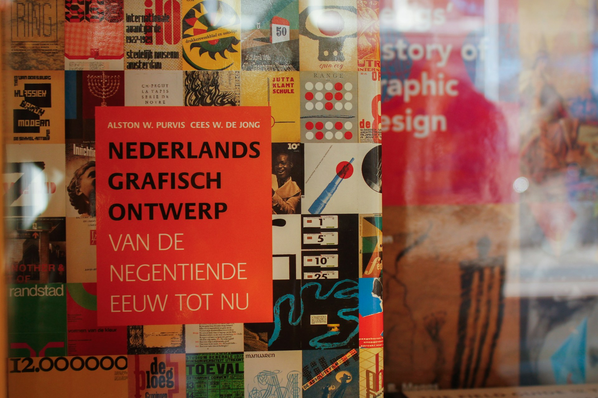
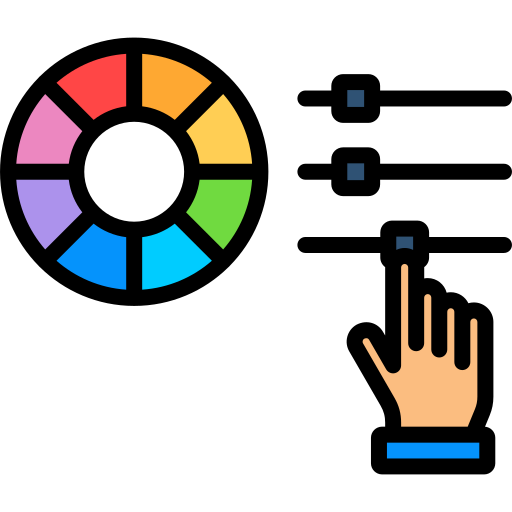
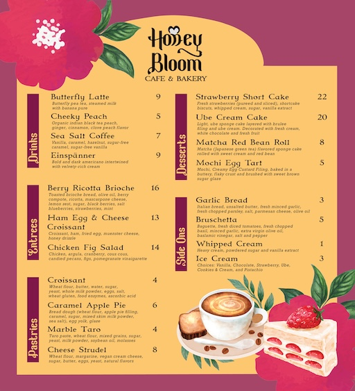
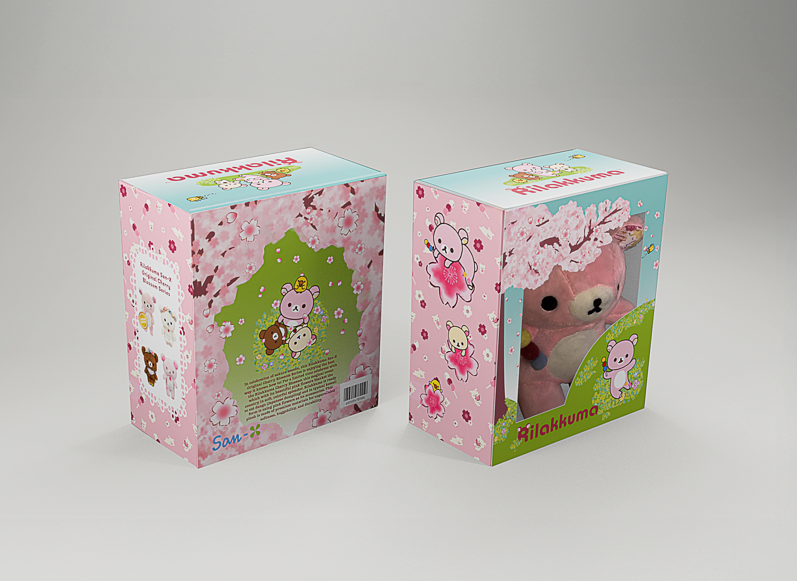

GRAPHIC DESIGN: BRIEANNE NAZARENO

Photo by Niels Kehl on Unsplash
T-he important starting point is this: To realize that color is not a material existence, not a substance, not a fixed fact equally appreciable by all and equally demonstrable to all. It is a sensation; and a sensation not of the same force or quality for different individuals. Of itself it depends upon the waves of the ether in space; for us it depends upon the power and truth of our eyes. One may truthfully see a color that is quite another thing to another person, if there should chance to be a difference radical enough or defects serious enough in the eyes of either.56 The laws governing light are of great importance to the colorists. There are subtleties that have important practical application which cannot be guessed otherwise than by direct reference to science. In no other way can a printer know for example what colors are complementary or what effect a certain color will have upon another when they are used together. There are many curious facts about color which do not appear to be regulated by laws at all similar to those we are accustomed to apply in other matters; that there is this universal and radical difference is of great importance to those who use color in printing. It is interesting to realize that color is produced by light waves, the different colors by waves of different lengths, or greater frequency; that red appears to the eye when the light wave is 1/39000 of an inch in length, or when the frequency of the vibration is 392 quadrillions per second, by the American system of enumeration. It may be also of practical money value to the printer to know such facts, and to always be conscious of a fact more likely to be of practical use, namely, that the sensation of color is produced upon our sensory nerves in a manner closely analogous to that which produces the sensation of harmony: by ether waves set in motion in a different way. These sensory nerves are the most57 easily entered avenues to our pleasurable sensations; far more delicate and responsive than the different brain organs to the more obvious consciousnesses, as personal regard and literary appreciation, etc.




Honey Bloom Cafe Menu
UGLY BOOK by Anna Wintour
I made a UGLY BOOK by Anna Wintour. It discusses about toxic korean beauty standards

Rilakkuma Toy Packaging
I made a Blossom collectible toy Packaging of Rilakkuma